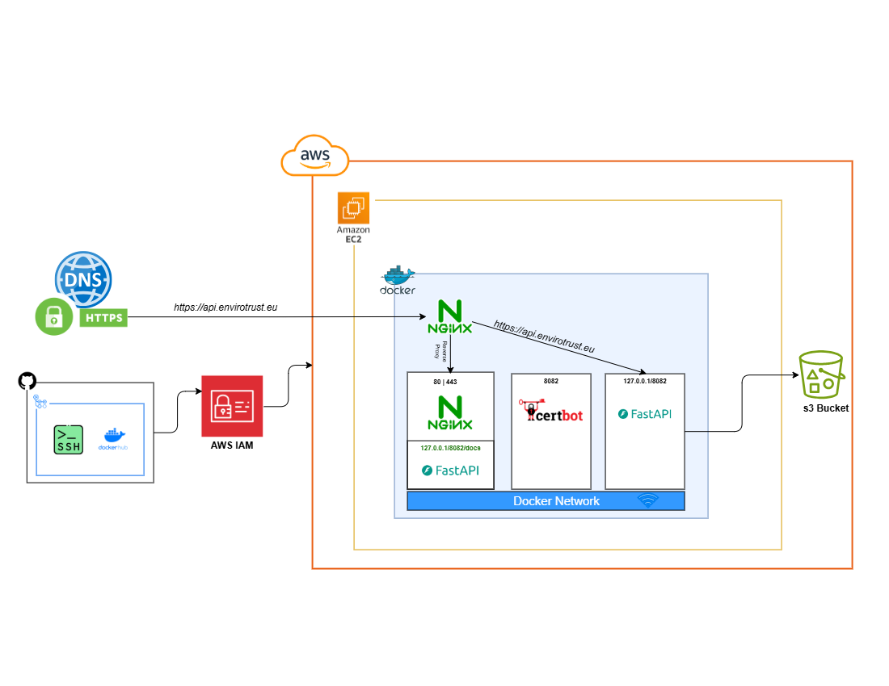

Envirotrust — Pan-European Climate Risk Platform
Geospatial Data Engineer · Envirotrust, Germany · June 2025 - Present

Envirotrust models wildfire, flood, heat, and wind risk across Europe. The product people see is a map; the part that makes it possible is the data engineering underneath it. As the data engineer on the project, these were mine to decide.
Choosing the storage formats
Climate and hazard data arrives as huge multi-dimensional rasters and long tabular histories, and loading it into a conventional spatial database would have meant paying for a large always-on server just to answer a map request. I standardised on cloud-native formats instead — Zarr for the multi-dimensional climate cubes, COG for the imagery and hazard layers, and Parquet for the tabular side. All three are readable directly from object storage by byte range, so a request pulls only the chunk it needs rather than the whole file.
Query and processing layer
On top of that I used Xarray for the gridded work and DuckDB for the tabular analytics — DuckDB reads Parquet on S3 in place, which removed a whole database tier from the architecture and kept aggregations fast without anything to provision or keep warm.
The API
I built the backend in FastAPI: async by default, which matters when most request time is spent waiting on object storage, and typed request and response models that generate their own OpenAPI docs, so the frontend team could work against a contract instead of against me. Titiler sits alongside it to tile the COGs on the fly, so no pre-rendered tile pyramids ever have to be generated or stored.
The endpoint lets property owners and real estate professionals pass a location and instantly get back the climate risk attached to that land or property — wildfire, flood, heat, and wind — turning the whole pipeline into a single question a non-technical user can ask.
Infrastructure and delivery
Everything is containerised with Docker and runs on AWS — S3 for the data lake, Lambda for spiky per-request work, EC2 for the sustained pipeline jobs. I set up the GitHub Actions CI/CD so tests, image builds, and deployment run on every merge; with a distributed remote team, making deployment boring was worth more than any individual optimisation.
Ingestion pipelines
The pipelines source and harmonise hazard and climate data from many providers, each with its own projection, resolution, and update cadence, and aggregate it to the risk parameters the scenario models actually consume. The aggregation strategy was designed around minimising what has to move to the cloud — reduce early, transfer little, model fast.